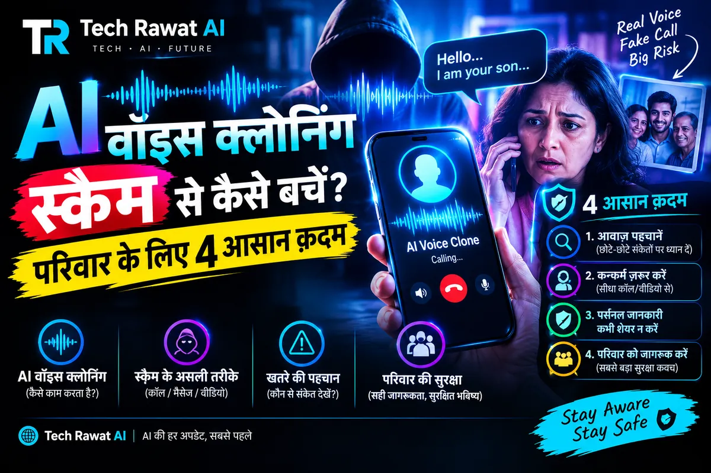

AI वॉइस क्लोनिंग स्कैम से कैसे बचें: 4 क़दम जो हर परिवार को याद होने चाहिए

AI वॉइस क्लोनिंग स्कैम से कैसे बचें? आवाज़ को सबूत मत मानिए। पैसे माँगने वाली हर कॉल काटकर अपने फ़ोन में सेव उसके असली नंबर पर दोबारा फ़ोन कीजिए, परिवार का गुप्त कोड शब्द पूछिए, रकम आने का संदेश नहीं बल्कि बैंक ऐप का बैलेंस देखिए, और ठगी हो जाए तो तुरंत 1930 पर बताइए।
AI वॉइस क्लोनिंग स्कैम क्या है और कैसे होता है?
AI वॉइस क्लोनिंग का मतलब है किसी की आवाज़ का छोटा नमूना लेकर AI सॉफ़्टवेयर से उसकी हू-ब-हू नकल बना लेना। ठग उसी आवाज़ में आपको फ़ोन करता है और अस्पताल, हादसे या थाने जैसी आपात कहानी सुनाकर तुरंत पैसे माँगता है। तमिलनाडु पुलिस की साइबर अपराध शाखा की सलाह के अनुसार आवाज़ का नमूना सोशल मीडिया की पोस्ट और वीडियो से मिल सकता है, या “ग़लत नंबर” बताकर की गई बातचीत से भी। भुगतान के लिए UPI जैसे तेज़ तरीक़े सुझाए जाते हैं।
इंदौर का मामला देखिए। the420.in की रिपोर्ट के मुताबिक 6 जनवरी 2026 की रात एक प्ले स्कूल चलाने वाली महिला (नाम बदला हुआ) के पास उनके चचेरे भाई के नंबर से मिलते-जुलते नंबर से कॉल आई। आवाज़ उन चचेरे भाई जैसी ही थी, जो उत्तर प्रदेश पुलिस की आपात सेवा में काम करते हैं। कॉल करने वाले ने कहा कि उसका एक दोस्त इंदौर के निजी अस्पताल में है और दिल की सर्जरी के लिए तुरंत पैसे चाहिए। फिर उसने बताया कि वह उनके खाते में छोटी-छोटी रकम भेज रहा है, आप उसे अस्पताल के QR कोड पर आगे भेज दीजिए, क्योंकि उससे सीधे भुगतान नहीं हो पा रहा। फ़ोन पर रकम आने के संदेश भी आए। महिला की बेटी ने चार लेन-देन में ₹97,500 भेज दिए।
पाँच मिनट की कॉल ख़त्म होने के कुछ देर बाद बैंक खाता देखा गया तो एक रुपया भी जमा नहीं हुआ था। जाँच करने वालों के अनुसार वे संदेश नक़ली थे। 7 जनवरी 2026 को लसूड़िया थाने में शिकायत दर्ज हुई। इंदौर के अतिरिक्त पुलिस उपायुक्त (अपराध) राजेश दंडोतिया ने प्रारंभिक जाँच के आधार पर इसे AI आवाज़ क्लोनिंग से जुड़ा बताया और कहा कि यह संभवतः पूरे राज्य में ऐसा पहला दर्ज मामला है। पुलिस यह भी देख रही है कि घटना से लगभग तीन महीने पहले आया वह अनजान कॉल, जिसमें स्कूल के बारे में पूछकर फ़ोन काट दिया गया था, कहीं पहले की टोह तो नहीं थी।
कोलकाता का मामला भी वैसा ही है। द पायनियर में 15 सितंबर 2026 को छपे लेख के अनुसार 67 साल के एक व्यक्ति को अपने परिचित अजॉय जैसी आवाज़ में फ़ोन आया कि एक रिश्तेदार को निजी अस्पताल में भर्ती कराया गया है और पैसे चाहिए। उन्होंने एक घंटे से कम समय में ₹95,990 भेज दिए। असली अजॉय से बात हुई तो पता चला कि उन्होंने कोई कॉल की ही नहीं थी।
दोनों कहानियाँ अस्पताल की थीं और रकम ₹1 लाख से कम। एक बात और: अमर उजाला ने 10 जनवरी 2026 को इंदौर के मामले में भाई की आवाज़ और लगभग एक लाख रुपये लिखे थे, जबकि the420.in में चचेरा भाई और ₹97,500 है। हमने ज़्यादा ब्योरे वाली रिपोर्ट के आँकड़े लिए हैं। AI Voice Cloning Scam Kaise Bache जैसा सवाल मन में हो, तो इन मामलों से एक बात साफ़ है: ठग की ताक़त आवाज़ नहीं, आपकी घबराहट है।
कितनी सेकंड की आवाज़ से नकल बन जाती है और क्या कान से फ़र्क़ पकड़ा जा सकता है?
McAfee की रिपोर्ट में शोधकर्ताओं को एक दर्जन से ज़्यादा मुफ़्त AI क्लोनिंग टूल मिले। उनमें से एक सिर्फ़ तीन सेकंड की आवाज़ से 85% मिलान वाली नकल बना सका, और थोड़ी ट्रेनिंग के बाद वीडियो की कुछ फ़ाइलों से 95% मिलान तक पहुँचा। ये McAfee का अपना सर्वे और परीक्षण है, कोई स्वतंत्र सरकारी आँकड़ा नहीं, और इसकी प्रकाशन तारीख़ हमें पक्की नहीं मिली। फिर भी भारत की तस्वीर इससे समझ आती है:
| बात | McAfee की रिपोर्ट में क्या मिला |
|---|---|
| भारतीय वयस्क जिन्होंने AI वॉइस स्कैम झेला या किसी को झेलते देखा | 47% (वैश्विक औसत 25%) |
| AI वॉइस स्कैम के शिकार, जिन्होंने कुछ पैसे गँवाए | 83% |
| पैसे गँवाने वालों में ₹50,000 या उससे ज़्यादा गँवाने वाले | 48% |
| नक़ली आवाज़ पहचानने में भरोसा न रखने वाले भारतीय वयस्क | 69% |
| हर हफ़्ते सोशल मीडिया या वॉइस नोट पर अपनी आवाज़ डालने वाले भारतीय वयस्क | 86% |
सीधा नतीजा: कान पर भरोसा मत कीजिए। अमेरिकी संघीय व्यापार आयोग (FTC) की उपभोक्ता सलाह भी यही कहती है कि आवाज़ पर भरोसा न करें, उस व्यक्ति को उसके पहचाने हुए नंबर पर फ़ोन करके कहानी की पुष्टि करें। पंजाब एंड सिंध बैंक की जागरूकता सूचना में भी यही लिखा है कि कॉल करने वाले की पहचान सिर्फ़ आवाज़ से तय न करें और पैसे तुरंत भेजने के दबाव का विरोध करें।
क्लोनिंग उसी जनरेटिव AI तकनीक की देन है जो पैटर्न सीखकर नई आवाज़ रच देती है, जिसे आप जनरेटिव AI जिस तरह नई सामग्री बनाता है वाले लेख में आसान भाषा में पढ़ सकते हैं। ChatGPT जैसे ऐप में भी हिंदी बोलने वाली स्वाभाविक आवाज़ें मिलती हैं (ChatGPT की हिंदी वॉइस Neer और Leher), यानी आवाज़ का सहज और इंसानी लगना अपने आप में असली होने का सबूत नहीं रहा।
एक बात ईमानदारी से: द पायनियर के लेख के अनुसार AI वॉइस क्लोनिंग ठगी का अलग राष्ट्रीय सरकारी आँकड़ा उपलब्ध नहीं है। इसलिए जो संख्याएँ ऊपर हैं, उन्हें ठगी की कुल तस्वीर नहीं, एक सर्वे का अंदाज़ा समझिए।
फ़ोन पर पैसे की माँग आए तो कौन से 4 क़दम उठाएँ?
इन चारों क़दमों में से हर एक किसी न किसी असली मामले या सरकारी, पुलिस या बैंक की सलाह से निकला है:
- कॉल काटिए, सेव नंबर पर ख़ुद फ़ोन कीजिए: नंबर वह नहीं जो कॉल करने वाले ने दिया। इंदौर में कॉल का नंबर असली नंबर जैसा दिखता था, इसलिए नंबर का मिलता-जुलता लगना भी सबूत नहीं है। वह फ़ोन न उठाए तो परिवार के किसी दूसरे सदस्य या उसके दोस्त से पूछिए (FTC की सलाह)।
- कोड शब्द पूछिए: McAfee के तकनीकी प्रमुख की सलाह है कि परेशान रिश्तेदार की कॉल आए तो कोड शब्द पूछिए या ऐसा सवाल पूछिए जिसका जवाब सिर्फ़ उसे पता हो। द पायनियर के लेख में भी माता-पिता, बच्चों और बुज़ुर्गों के बीच एक निजी कोड शब्द तय करने की बात है।
- संदेश नहीं, बैंक ऐप का बैलेंस देखिए: इंदौर में रकम आने के संदेश नक़ली थे। किसी से मिली रकम को आगे भेजने से पहले अपने बैंक या UPI ऐप में जाकर ख़ुद देखिए कि पैसे सच में जमा हुए या नहीं। और जिसने ख़ुद भुगतान न कर पाने का बहाना बनाया हो, उसके कहने पर अपनी जेब से किसी अनजान QR कोड पर रकम न भेजिए।
- ठगी हो जाए तो 1930: राष्ट्रीय साइबर अपराध हेल्पलाइन 1930 पर तुरंत बताइए, विस्तार इसी लेख के आख़िरी हिस्से में है।
ठग की कहानी में चेतावनी देने वाली 5 बातें
| कॉल में क्या हुआ | कहाँ दिखा | आपका जवाब |
|---|---|---|
| नंबर जाने-पहचाने नंबर जैसा, पर असली नहीं | इंदौर का मामला | कॉल काटकर सेव नंबर पर फ़ोन करें |
| अस्पताल या हादसे की आपात कहानी, तुरंत पैसे | इंदौर और कोलकाता के मामले, तमिलनाडु पुलिस की सलाह | दबाव में फ़ैसला न लें, दूसरे रास्ते से पुष्टि करें |
| “तकनीकी दिक्कत” बताकर आपके खाते से QR कोड पर भुगतान करवाना | इंदौर का मामला | अपनी जेब से अनजान QR पर पैसे न भेजें |
| रकम आने के संदेश | इंदौर में वे नक़ली निकले | बैंक ऐप में बैलेंस ख़ुद देखें |
| कॉल के बाद नंबर बंद | इंदौर में नंबर बंद मिला | बिना देर किए 1930 पर बताएँ |
परिवार का कोड शब्द कैसे तय करें और बुज़ुर्गों को कैसे समझाएँ?
कोड शब्द की सलाह कई जगह मिलती है, पर तय कैसे करें, ये कहीं साफ़ नहीं लिखा। ये हमारी सलाह है, किसी रिपोर्ट का दावा नहीं: ऐसा शब्द चुनिए जो आपके सोशल मीडिया पर, पुरानी तस्वीरों के कैप्शन में या नाम-जन्मतिथि में कहीं न दिखे। उसे परिवार के चैट समूह में लिखकर भेजने के बजाय आमने-सामने या फ़ोन पर बताइए। और पूछने की बारी तय कर लीजिए: जिसे पैसे की माँग वाली कॉल आए, वही कोड शब्द पूछे।
द पायनियर का लेख बच्चों के लिए भी यही सिखाने को कहता है: माता-पिता की आवाज़ भी पहचान का पक्का सबूत नहीं है, इसलिए बच्चे कॉल काटकर किसी जाने-पहचाने नंबर से माता-पिता या किसी भरोसेमंद वयस्क से बात करें। बुज़ुर्गों के बारे में लेख की सलाह है कि परिवार उनसे इस ठगी की चर्चा ज़रूर करे, ये मानकर न चले कि वे ख़ुद पहचान लेंगे। साथ ही अनजान कॉल पर OTP, PIN या बैंक ब्योरा न बताएँ और अपनी लंबी आवाज़ रिकॉर्डिंग सार्वजनिक रूप से डालने से बचें।
द पायनियर के अनुसार इंडिया AI मिशन के सुरक्षित और भरोसेमंद AI कार्यक्रम के तहत ऑडियो और वीडियो जालसाज़ी पकड़ने वाली AI Vishleshak परियोजना और असली समय में आवाज़ के डीपफ़ेक पहचानने वाली आईआईटी खड़गपुर की परियोजना शामिल हैं। आम लोगों के लिए इनकी उपलब्धता की जानकारी उस लेख में नहीं है, इसलिए अपनी आदत ही पहली सुरक्षा है।
पैसे चले गए तो पहले एक घंटे में क्या करें?
महाराष्ट्र के मुख्यमंत्री देवेंद्र फडणवीस ने विधानसभा में कहा था कि साइबर ठगी के बाद पहले 60 मिनट सबसे अहम हैं, जिनमें शिकायत हो जाए तो पैसा रोकने या वापस पाने की संभावना बहुत बढ़ जाती है। ये एक नेता का बयान है, गारंटी नहीं, पर कारण साफ़ है: ठग पैसा आगे घुमा देते हैं। इसलिए क्रम ये रखिए:
- 1930 पर फ़ोन: बैंक या UPI ऐप का नाम, ट्रांज़ैक्शन आईडी या UTR नंबर, रकम, तारीख़ और समय, और ठग का नंबर पास रखिए।
- cybercrime.gov.in पर शिकायत: राष्ट्रीय साइबर अपराध रिपोर्टिंग पोर्टल पर वित्तीय धोखाधड़ी की शिकायत दर्ज कीजिए। तमिलनाडु पुलिस और पंजाब एंड सिंध बैंक, दोनों ने 1930 और यही पोर्टल बताया है।
- बैंक को सूचना: अमर उजाला की रिपोर्ट में भी शिकायत के बाद बैंक को बताने की सलाह है, ताकि वह लेन-देन रोकने की कोशिश कर सके।
- सबूत सहेजिए: कॉल का स्क्रीनशॉट या कॉल लॉग, संदेश और भुगतान की रसीद। नवभारत लाइव की रिपोर्ट में भी सबूत सुरक्षित रखने को कहा गया है।
सरकारी आँकड़ों से इस तरीक़े का महत्व समझ आता है। गृह राज्य मंत्री बंडी संजय कुमार ने राज्य सभा में लिखित जवाब में बताया कि नागरिक वित्तीय साइबर धोखाधड़ी रिपोर्टिंग एवं प्रबंधन प्रणाली (CFCFRMS) ने 30 जून 2026 तक 32.80 लाख से ज़्यादा शिकायतों में ₹11,158 करोड़ से ज़्यादा बचाने में मदद की। इसका मतलब ये नहीं कि हर पीड़ित को पूरा पैसा लौटता है। 2025 में 28.15 लाख साइबर धोखाधड़ी शिकायतें और ₹22,495 करोड़ का नुक़सान दर्ज हुआ, ऐसा द पायनियर के लेख में सरकार के हवाले से लिखा है।
ये जानकारी 18 अक्टूबर 2026 तक की है। शिकायत की प्रक्रिया, सरकारी आँकड़े और पुलिस की सलाह बदल सकते हैं, इसलिए शिकायत करते समय 1930 पर सही प्रक्रिया की पुष्टि कर लीजिए। अगला क़दम: परिवार के सबसे बुज़ुर्ग सदस्य के साथ बैठकर इसी लेख के चार क़दम पढ़िए और कोड शब्द वहीं तय कर लीजिए।